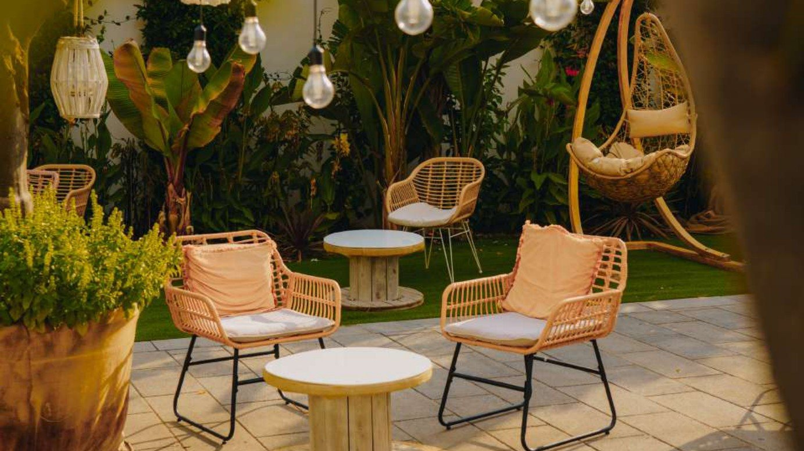
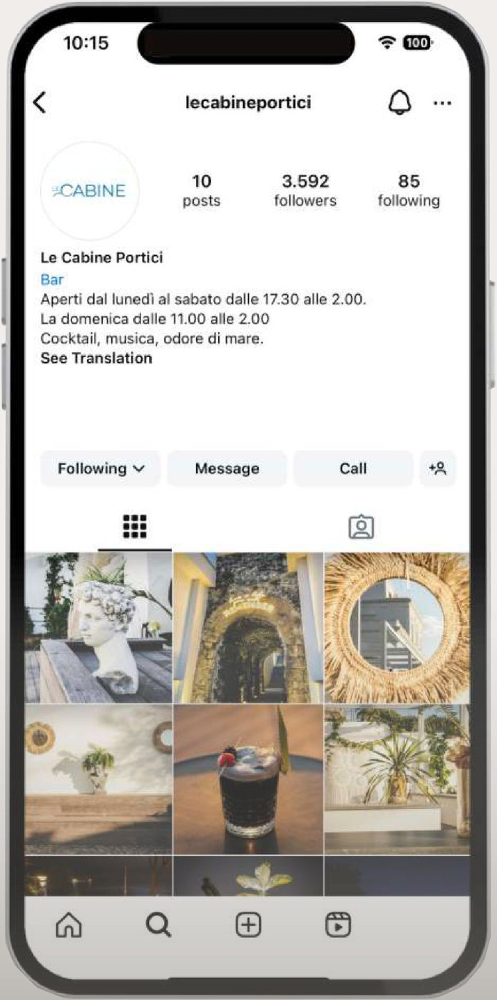
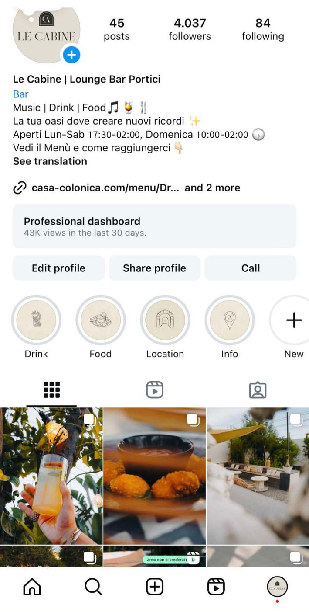
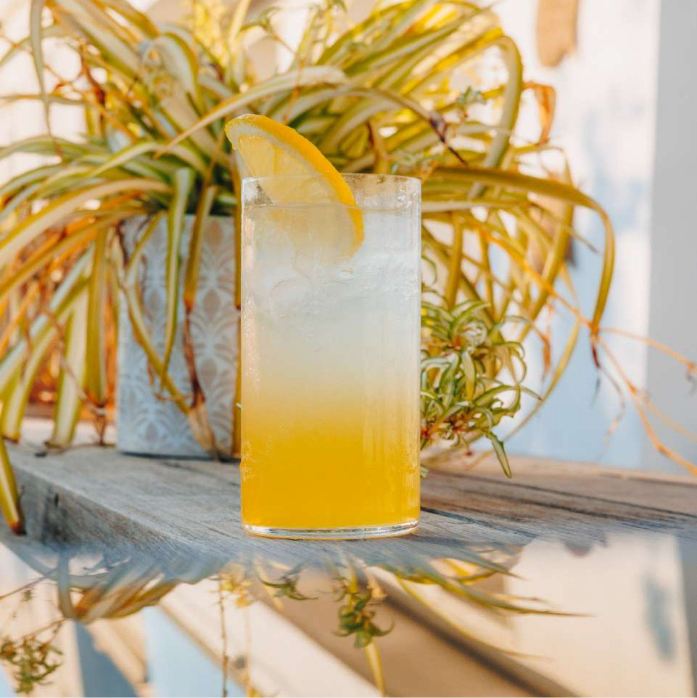
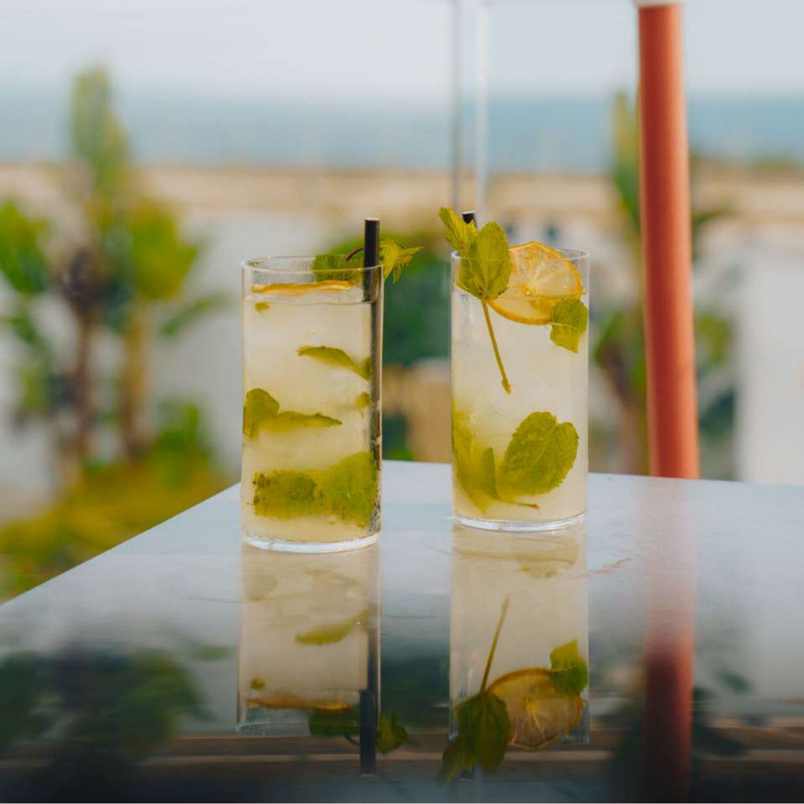

Le
Cabine

Un lounge bar dopo la ristrutturazione
Le Cabine sono un lounge bar a Portici, all’interno del complesso di Casa Colonica, punto di riferimento per eventi e ristorazione della città. Dopo i lavori di ristrutturazione avevano bisogno di comunicare la loro nuova identità.
Una comunicazione senza identità
Al 30 giugno 2024 la comunicazione online era datata e senza un’identità precisa: bio non ottimizzata, nessun posizionamento, stories assenti e poco coinvolgimento del pubblico.
In più il cliente non voleva più essere visto come un posto dove fare serata, ma come un lounge bar con un concetto diverso di aperitivo, che organizza anche eventi privati.
Riposizionamento
Abbiamo individuato i punti di forza della struttura e dell’offerta, definito un tono di voce e un moodboard, e scelto i messaggi precisi da trasmettere al pubblico:
“Le Cabine sono il luogo, a due passi dal mare, dove concedersi un momento di relax.”
Il profilo, prima e dopo
90 giorni

Lo shooting
Realizzato ad hocAbbiamo trasmesso il nuovo messaggio con una content creation dedicata, partendo da uno shooting pensato per il posizionamento.



Le stories
Focus onIl lavoro, soprattutto nelle stories, ha comunicato il messaggio sia a parole sia con le immagini: golden hour, interazione, messaggi accoglienti, location e aesthetic drinks.
I risultati
In 90 giorniTutti risultati organici, cioè ottenuti senza campagne di advertising.

 Next project
Stabilimento balneare · Baia DomiziaLido MarinaProgetto completo
Next project
Stabilimento balneare · Baia DomiziaLido MarinaProgetto completo